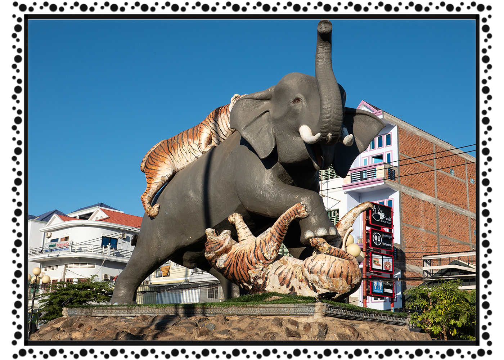

ខេត្ត និងក្រុងនៃព្រះរាជាណាចក្រកម្ពុជា
កំពង់ធំ
 កំពង់ធំ គឺជាខេត្តមួយក្នុងប្រទេសកម្ពុជា ។ វាមានព្រំប្រទល់ជាប់ខេត្តសៀមរាប នៅភាគពាយព្យ ព្រះវិហារ នៅភាគខាងជើង ស្ទឹងត្រែងនៅភាគឦសាន ក្រចេះនៅខាងកើត កំពង់ចាម កំពង់ឆ្នាំង នៅខាងត្បូង និង បឹងទន្លេសាបនៅភាគខាងលិច។ ខេត្តកំពង់ធំមានទីរួមខេត្តឈ្មោះក្រុងស្ទឹងសែន ដែលជាទីក្រុងមួយដែលមានប្រជាជន ៣០ ០០០ នាក់ មានទេសភាពដ៏ល្អប្រណីត គួរអោយចាប់ចិត្ត ស្ថិតនៅតាមបណ្តោយនៃច្រាំងដងស្ទឹងសែន។ កំពង់ធំ គឺជាខេត្ត មួយដែលស្ថិតនៅចំកណ្តាលផ្ទៃប្រទេសកម្ពុជា។ ខេត្តនេះមានផ្ទៃដីសរុប ១៣ ៨១៤ សហាតិមាត្រការ៉េ ហើយបែងចែកជា ៩ ស្រុក-ក្រុង, ៨១ ឃុំ-សង្កាត់ និង ៧៣៤ ភូមិ[២]។ ខេត្តកំពង់ធំជាខេត្តមានផ្ទៃដីធំទី២នៅក្នុងប្រទេសកម្ពុជា។ ក្រុមប្រាសាទសំបូរព្រៃគុហ៍ ដែលសរុបមានប្រមាណជិតពីររយប្រាសាទផ្សេងទៀត មានសារៈសំខាន់ណាស់សម្រាប់ការសិក្សាអំពីអារ្យធម៌ខ្មែរ មុនសម័យអង្គរ។ ក្រុមប្រាសាទទាំងនេះមានការទាក់ទាញទេសចរណ៍ និង អ្នកស្រាវជ្រាវដូចជាប្រាសាទដទៃទៀតក្នុងតំបន់អង្គរដែរ ហើយដែលត្រូវបានគេចាប់អារម្មណ៍យ៉ាងខ្លាំងនៅពេលបានទៅ ទស្សនាផ្ទាល់។ មានស្ថានីយ៍បុរាណសម័យអង្គរគួរឱ្យចាប់អារម្មណ៍ជាច្រើនក្នុងតំបន់នេះ រួមមានប្រាសាទសំបូរព្រៃគុក និង ប្រាសាទអណ្ដែត។ ជាពិសេសនៅពេលបានទៅកំសាន្តហើយៗបានស្នាក់នៅ ១ យប់ ឬ ពីរយប់ជាមួយប្រជាជននៅទីនោះ ជាពិសេសនៅភូមិកំពង់ឈើទាលនាមាត់ស្ទឹងសែន។ នោះគឺ ផ្ទះស្នាក់ របស់សហគមន៍នៅទីនោះ។ ខេត្តនេះ មានបណ្តាញផ្លូវជាតិលេខ៦ ភ្ជាប់ពី ក្រុងភ្នំពេញ ទៅ ខេត្តសៀមរាប ហើយ មានផ្លូវបំបែកទៅ ខេត្តព្រះវិហារ តាមរយៈផ្លូវជាតិលេខ៦៤ ដែលមានចម្ងាយ ១២៦ សហាតិមាត្រ។ ខេត្តកំពង់ធំជាខេត្តមួយផងដែរដែលសំបូរទៅដោយសក្តានុពលទេសចរណ៍ដើម្បីទាក់ទាញភ្ញៀវទេសចរជាតិនិងអន្ដរជាតិដូចជាការកម្រនិងអសកម្មបឹង, ទន្លេ, ព្រៃភ្នំនិងប្រាសាទបុរាណចំនួនជាង 200 ។ ក៏ជាខេត្តមួយក្នុងចំណោមខេត្តទាំងប្រាំបួនដែលមានព្រំប្រទល់ជាប់បឹងទន្លេសាបដែរ កំពង់ធំជាប៉ែកនៃឋបនីយដ្ឋានជីវមណ្ឌលបឹងទន្លេសាប។